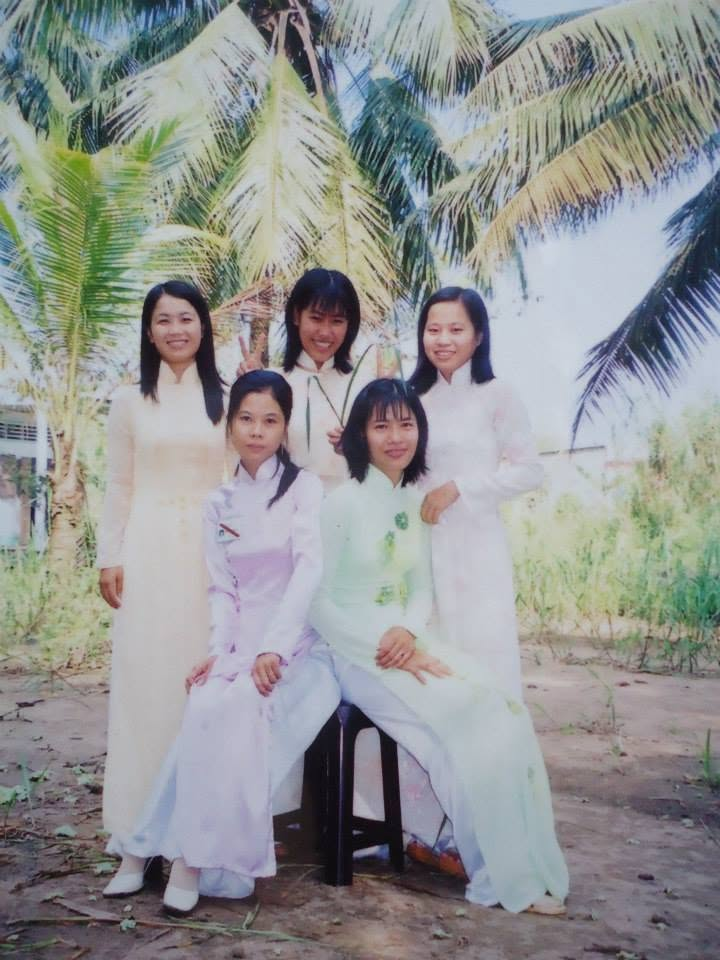
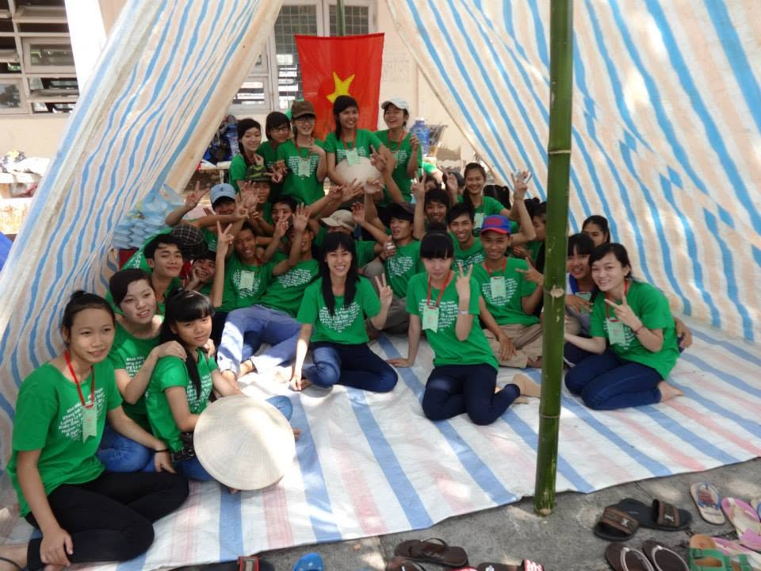

Chúc mừng
ngày Nhà giáo
Việt Nam
Hy vọng mọi điều tốt đẹp sẽ đến với cô. Chúc cô sức khỏe và hạnh phúc! ♡
Lời cảm ơn
từ trái tim ♡
Gửi đến cô Nguyễn Thị Thủy Trinh!,
Gửi đến cô Nguyễn Thị Thủy Trinh! Nhân ngày Nhà giáo Việt Nam 20/11, em muốn dành tặng cô những dòng suy nghĩ mà đôi khi em chưa thể nói thành lời. Điều em luôn trân trọng ở cô chính là sự kiên nhẫn và tận tâm dành cho học trò. Cô luôn sẵn lòng lắng nghe, giải đáp từng thắc mắc của em, kể cả những câu hỏi đôi khi có phần ngô nghê, khác lạ. Nhờ có cô, em chưa bao giờ cảm thấy ngại ngùng khi chia sẻ những suy nghĩ và băn khoăn của mình về một vấn đề nào đó. Em nghĩ rằng tình yêu dành cho một môn học đôi khi không chỉ đến từ những kiến thức trong sách vở, mà còn được nuôi dưỡng bởi chính người truyền đạt nó. Những bài giảng và sự nhiệt tình của cô đã nuôi dưỡng trong em tình yêu dành cho Sinh học, từ sự yêu thích ban đầu đến mong muốn được tìm hiểu và khám phá nhiều hơn về lĩnh vực này. Em cũng trân trọng những lời nhắc nhở, góp ý của cô bởi em hiểu rằng cô luôn mong em có định hướng đúng đắn và kiên trì với con đường mình đã lựa chọn. Em vẫn nhớ lần đầu tiên được cô gọi trả bài vào năm lớp 10. Hôm đó em được 7 điểm bài các phương pháp nghiên cứu Sinh học. Thế nhưng, bài học em nhớ nhất lại là bài đầu tiên về đạo đức sinh học. Có lẽ từ bài học ấy, mỗi khi tìm hiểu hay tiếp cận một vấn đề Sinh học mới, em thường nghĩ đến khía cạnh đạo đức đầu tiên. Em cũng nhớ những lần mình nảy ra những câu hỏi có phần khác lạ và được cô kiên nhẫn giải đáp, rồi còn động viên rằng những suy nghĩ ấy rất tốt. Em nghĩ chính sự đón nhận và khích lệ của cô đã giúp em hiểu rằng sự tò mò, những câu hỏi và cả những góc nhìn khác biệt đều đáng được trân trọng. Em muốn gửi đến cô lời cảm ơn chân thành nhất vì tất cả những điều cô đã dành cho em trong suốt thời gian qua. Cảm ơn cô vì đã kiên nhẫn giải đáp những thắc mắc của em, vì những bài giảng đầy tâm huyết, những lời động viên và cả những lần nhắc nhở để em ngày một trưởng thành hơn. Có thể em chưa đủ khéo léo để diễn đạt hết những điều mình nghĩ nhưng em thật sự trân trọng những gì cô đã truyền đạt và những dấu ấn cô để lại trong hành trình học tập của mình. Em tin rằng những điều ấy sẽ còn theo em trên chặng đường phía trước, ngay cả khi em không còn được học cô mỗi ngày. Đây cũng là lần cuối cùng được chúc cô một mùa 20/11 với tư cách là một học sinh, em mong cô sẽ luôn hạnh phúc và vững bước trên hành trình gieo những mầm xanh tri thức.
Chúc cô luôn giữ mãi nụ cười rạng rỡ trên môi và thật nhiều sức khỏe ạ!♡ Em cảm ơn cô rất nhiều!



